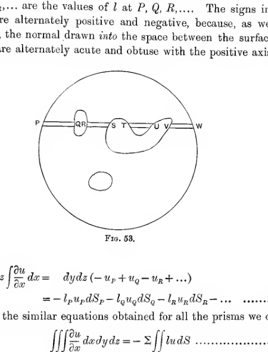
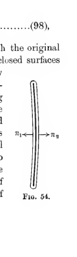
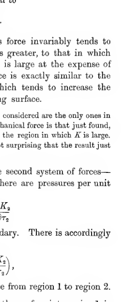
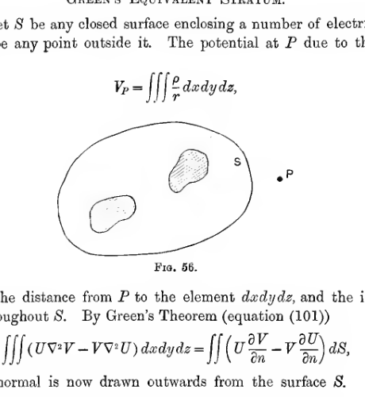

Chapter VII#
General Analytical Theorems#
Green’s Theorem#
175. A theorem, first given by Green, and commonly called after him, enables us to express an integral taken over the surfaces of a number of bodies as an integral taken through the space between them. This theorem naturally has many applications to Electrostatic Theory. It supplies a means of handling analytically the problems which Faraday treated geometrically with the help of his conception of tubes of force.
176. Theorem. If \(u, v, w\) are continuous functions of the Cartesian coordinates \(x, y, z\), then
Here \(\Sigma\) denotes that the surface integrals are summed over any number of closed surfaces, which may include as special cases either
one of finite size which encloses all the others, or
an imaginary sphere of infinite radius,
and \(l, m, n\) are the direction-cosines of the normal drawn in every case from the element \(dS\) into the space between the surfaces. The volume integral is taken throughout the space between the surfaces.
Consider first the value of \(\iiint \frac{\partial u}{\partial x} dxdydz\). Take any small prism with its axis parallel to that of \(x\), and of cross section \(dydz\). Let it meet the surfaces at \(P, Q, R, S, T, U, \ldots\) (fig. 53), cutting off areas \(dS_P, dS_Q, dS_R, \ldots\). The contribution of this prism to \(\iiint \frac{\partial u}{\partial x} dxdydz\) is \(dydz \int \frac{\partial u}{\partial x} dx\), where the integral is taken over those parts of the prism which are between the surfaces. Thus
where \(u_P, u_Q, u_R, \ldots\) are the values of \(u\) at \(P, Q, R, \ldots\). Also, since the projection of each of the areas \(dS_P, dS_Q, \ldots\) on the plane of \(yz\) is \(dydz\), we have
where \(l_P, l_Q, l_R, \ldots\) are the values of \(l\) at \(P, Q, R, \ldots\). The signs in front of \(l_P, l_Q, l_R, \ldots\) are alternately positive and negative, because, as we proceed along \(PQR\ldots\), the normal drawn into the space between the surfaces makes angles which are alternately acute and obtuse with the positive axis of \(x\).

A large closed outer boundary encloses several smaller internal boundaries. A straight sampling line passes through the whole figure and meets the boundaries at points \(P, Q, R, S, T, U, V, W\), illustrating the alternating entry and exit points used in Green’s theorem.
Thus
and on adding the similar equations obtained for all the prisms we obtain
the terms on the right-hand sides of equations of the type (95) combining so as exactly to give the term on the right-hand side of (96). We can treat the functions \(v\) and \(w\) similarly, and so obtain altogether
proving the theorem.
177. If \(u, v, w\) are the three components of any vector \(\mathbf{F}\), then the expression
is denoted, for reasons which will become clear later, by \(\operatorname{div}\mathbf{F}\). If \(N\) is the component of the vector in the direction of the normal \((l, m, n)\) to \(dS\), then
Thus Green’s Theorem assumes the form
A vector \(\mathbf{F}\) which is such that \(\operatorname{div}\mathbf{F}=0\) at every point within a certain region is said to be “solenoidal” within that region. If \(\mathbf{F}\) is solenoidal within any region, Green’s Theorem shews that
where the integral is taken over any closed surface inside the region within which \(\mathbf{F}\) is solenoidal. Two instances of a solenoidal vector have so far occurred in this book - the electric intensity in free space, and the polarisation in an uncharged dielectric.
178. Integration through space external to closed surfaces. Let the outer surface be a sphere at infinity, say a sphere of radius \(r\), where \(r\) is to be made infinite in the limit. The value of
taken over this sphere will vanish if \(u, v, w\) vanish more rapidly at infinity than \(1/r^2\). Thus, if this condition is satisfied, we have that
where the volume integral is taken through all space external to certain closed surfaces, and the surface integration is taken over these surfaces, \(l, m, n\) being the direction-cosines of the outward normal.
179. Integration through the interior of a closed surface. Let the inner surfaces in fig. 53 all disappear, then we have
where the volume integration is throughout the space inside a closed surface, and the surface integration is over this area, \(l, m, n\) being the direction-cosines of the inward normal to the surface.
180. Integration through a region in which \(u, v, w\) are discontinuous. The only case of discontinuity of \(u, v, w\) which possesses any physical importance is that in which \(u, v, w\) change discontinuously in value in crossing certain surfaces, these being finite in number. To treat this case, we enclose each surface of discontinuity inside a surface drawn so as to fit it closely on both sides. In the space left, after the interiors of such closed surfaces have been excluded, the functions \(u, v, w\) are continuous. We may accordingly apply Green’s Theorem, and obtain
where \(\Sigma\) denotes summation over the closed surfaces by which the original space was limited, and \(\Sigma'\) denotes summation over the new closed surfaces which surround surfaces of discontinuity of \(u, v, w\). Now corresponding to any element of area \(dS\) on a surface of discontinuity there will be two elements of area of the enclosing surface. Let the direction-cosines of the two normals to \(dS\) be \(l_1, m_1, n_1\) and \(l_2, m_2, n_2\), so that \(l_1=-l_2\), \(m_1=-m_2\), and \(n_1=-n_2\). Let these direction-cosines be those of normals drawn from \(dS\) to the two sides of the surface, which we shall denote by 1 and 2, and let the values of \(u, v, w\) on the two sides of the surface of discontinuity at the element \(dS\) be \(u_1, v_1, w_1\) and \(u_2, v_2, w_2\). Then clearly the two elements of the enclosing surface, which fit against the element \(dS\) of the original surface of discontinuity, will contribute to
an amount
or
Thus the whole value of \(\Sigma' \iint (lu + mv + nw)dS\) may be expressed in the form
where the integration is now over the actual surfaces of discontinuity. Thus Green’s Theorem becomes

A thin surface of discontinuity is shown edge-on, with opposite normals labelled on the two sides. The diagram marks the paired normals used to express the jump terms when a field changes discontinuously across a surface.
Special Form of Green’s Theorem#
181. An important case of the theorem occurs when \(u, v, w\) have the special values
where \(\Phi\) and \(\Psi\) are any functions of \(x, y\) and \(z\). The value of \((lu+mv+nw)\) is now
or
where \(\partial/\partial n\) denotes differentiation along the normal, of which the direction-cosines are \(l, m, n\). We also have
Thus the theorem becomes
This theorem is true for all values of \(\Phi\) and \(\Psi\), so that we may interchange \(\Phi\) and \(\Psi\), and the equation remains true. Subtracting the equation so obtained from equation (100), we get
Applications of Green’s Theorem#
182. In equation (101), put \(\Phi = 1\) and \(\Psi = V\), where \(V\) denotes the electrostatic potential. We obtain
Let us divide the sum on the right into \(I_1\), the integral over a single closed surface enclosing any number of conductors, and \(I_2\), the integrals over the surfaces of the conductors. Thus
where \(\partial/\partial n\) denotes differentiation along the normal drawn into the surface. Thus \(-\partial V/\partial n\) is equal to the component of intensity along this normal, and therefore to \(-N\), where \(N\) is the component along the outward normal. Hence
At the surface of a conductor \(\partial V/\partial n = -4\pi\sigma\), so that
If there is any volume electrification, \(\nabla^2 V = -4\pi\rho\), so that
and the integral on the right represents the total volume electrification. Thus equation (102) becomes
so that the theorem reduces to Gauss’ Theorem.
183. Next put \(\Phi\) and \(\Psi\) each equal to \(V\). Then equation (100) becomes
Take the surfaces now to be the surfaces of conductors, and a sphere of radius \(r\) at infinity. At infinity \(V\) is of order \(1/r\), so that \(\partial V/\partial n\) is of order \(1/r^2\), and hence \(V\,\partial V/\partial n\), integrated over the sphere at infinity, vanishes (S 178). The equation becomes
The first and last terms together give \(-4\pi \times \Sigma eV\), where \(e\) is any element of charge, either of volume-electrification or surface-electrification. Thus the whole equation becomes
shewing that the energy may be regarded as distributed through the space outside the conductors, to the amount \(R^2/8\pi\) per unit volume - the result already obtained in S 168.
184. In Green’s Theorem, take
Here \(K\) is ultimately to be taken to be the inductive capacity, which may vary discontinuously on crossing the boundary between two dielectrics. We accordingly suppose \(u, v, w\) to be discontinuous, and use Green’s Theorem in the form given in S 180. We have then
where \(\partial/\partial \nu_1\), \(\partial/\partial \nu_2\) have the meanings assigned to them in S 140.
If we put \(\Phi = 1\), \(\Psi = V\), in this equation, it reduces, as in S 130, to
so that the result is that of the extension of Gauss’ Theorem. Again, if we put \(\Phi = \Psi = V\), the equation becomes
and the result is that of S 169.
Green’s Reciprocation Theorem#
185. In equation (101), put \(\Phi = V\), \(\Psi = V'\), where \(V\) is the potential of one distribution of electricity, and \(V'\) is that of a second and independent distribution. The equation becomes
which is simply the theorem of S 102, namely
If we assign the same values to \(\Phi, \Psi\) in equation (103), we again obtain equation (104), which is now seen to be applicable when dielectrics are present.
Uniqueness of Solution#
186. We can use Green’s Theorem to obtain analytical proofs of the theorems already given in S 99.
Theorem. If the value of the potential \(V\) is known at every point on a number of closed surfaces by which a space is bounded internally and externally, there is only one value for \(V\) at every point of this intervening space, which satisfies the condition that \(\nabla^2 V\) either vanishes or has an assigned value, at every point of this space.
For, if possible, let \(V, V'\) denote two values of the potential, both of which satisfy the requisite conditions. Then \(V'-V=0\) at every point of the surfaces, and \(\nabla^2(V'-V)=0\) at every point of the space. Putting \(\Phi\) and \(\Psi\) each equal to \(V'-V\) in equation (100), we obtain
and this integral, being a sum of squares, can only vanish through the vanishing of each term. We must therefore have
or \(V'-V\) equal to a constant. And since \(V'-V\) vanishes at the surfaces, this constant must be zero, so that \(V=V'\) everywhere, i.e. the two solutions are identical: there is only one solution.
187. Theorem. Given the value of \(\partial V/\partial n\) at every point of a number of closed surfaces, there is only one possible value for \(V\) (except for additive constants), at each point of the intervening space, subject to the condition that \(\nabla^2 V=0\) throughout this space, or has an assigned value at each point.
The proof is almost identical with that of the last theorem, the only difference being that at every point of the surfaces we have
instead of the former condition \(V'-V=0\). We still have
so that equation (105) is true, and the result follows as before, except that \(V\) and \(V'\) may now differ by a constant.
188. Theorems exactly similar to these last two theorems are easily seen to be true when the dielectric is different from air.
For, let \(V, V'\) be two solutions, such that
at all points of the space, and at the surface either \(V-V'=0\), or \(\partial(V-V')/\partial n=0\).
By Green’s Theorem,
by hypothesis. Equation (105) now follows as before, so that the result is proved.
Comparisons of Different Fields#
189. Theorem. If any number of surfaces are fixed in position, and a given charge is placed on each surface, then the energy is a minimum when the charges are placed so that every surface is an equipotential.
Let \(V'\) be the actual potential at any point of the field, and \(V\) the potential when the electricity is arranged so that each surface is an equipotential. Calling the corresponding energies \(W'\) and \(W\), we have
If we put \(\Phi=V\), \(\Psi=V'-V\), in equation (100), we find that the last integral becomes
or, since \(V\) is by hypothesis constant over each conductor,
and this vanishes since each total charge \(\iint \sigma'dS\) is the same as the corresponding total charge \(\iint \sigma dS\). Thus
This integral is essentially positive, so that \(W'\) is greater than \(W\), which proves the theorem.
If any distribution is suddenly set free and allowed to flow so that the surface of each conductor becomes an equipotential, the loss of energy \(W'-W\) is seen to be equal to the energy of a field of potential \(V'-V\) at any point.
190. Theorem. The introduction of a new conductor lessens the energy of the field.
Let accented symbols refer to the field after a new conductor \(S\) has been introduced, insulated and uncharged. Then
By Green’s Theorem, the last line becomes, after reduction,
from which the theorem follows.
191. Theorem. Any increase in the inductive capacity of the dielectric between conductors lessens the energy of the field.
Let the conductors of the field be supposed fixed in position and insulated, so that their total charge remains unaltered. Let the inductive capacity at any point change from \(K\) to \(K+\delta K\), and as a consequence let the potential change from \(V\) to \(V+\delta V\), and the total energy of the field from \(W\) to \(W+\delta W\).
If \(E_1, E_2, \ldots\) denote the total charges of the conductors, \(V_1, V_2, \ldots\) their potentials, and \(\rho\) the volume density at any point, then
so that, since the \(E\)’s and \(\rho\) remain unaltered by changes in \(K\), we have
We also have
so that, after transformation by Green’s theorem,
Thus \(\delta W\) is necessarily negative if \(\delta K\) is positive, proving the theorem.
It is worth noticing that, on the molecular theory of dielectrics, the increase in the inductive capacity of the dielectric at any point will be most readily accomplished by introducing new molecules. If, as in Chap. v, these molecules are regarded as uncharged conductors, the theorem just proved becomes identical with that of S 190.
Earnshaw’s Theorem#
192. Theorem. A charged body placed in an electric field of force cannot rest in stable equilibrium under the influence of the electric forces alone.
Let us suppose the charged body \(A\) to be in any position, in the field of force produced by other bodies \(B, B', \ldots\). First suppose all the electricity on \(A, B, B', \ldots\) to be fixed in position on these conductors. Let \(V\) denote the potential, at any point of the field, of the electricity on \(B, B', \ldots\). Let \(x, y, z\) be the coordinates of any definite point in \(A\), say its centre of gravity, and let \(x+a, y+b, z+c\) be the coordinates of any other point. The potential energy of any element of charge \(e\) at \(x+a, y+b, z+c\) is \(eV\), where \(V\) is evaluated at \(x+a, y+b, z+c\). Denoting \(eV\) by \(w\), we clearly have
since \(V\) is a solution of Laplace’s equation. Let \(W\) be the total energy of the body \(A\) in the field of force from \(B, B', \ldots\). Then \(W=\Sigma w\), and therefore
i.e. the sum \(W=\Sigma w\) satisfies Laplace’s equation, because this equation is satisfied by the terms of the sum separately. It follows from this equation, as in S 52, that \(W\) cannot be a true maximum or a true minimum for any values of \(x, y, z\). Thus, whatever the position of the body \(A\), it will always be possible to find a displacement - i.e. a change in the values of \(x, y, z\) - for which \(W\) decreases. If, after this displacement, the electricity on the conductors \(A, B, B', \ldots\) is set free, so that each surface becomes an equipotential, it follows from S 189 that the energy of the field is still further lessened. Thus a displacement of the body \(A\) has been found which lessens the energy of the field, and therefore the body \(A\) cannot rest in stable equilibrium.
One physical application of Earnshaw’s Theorem is of extreme importance. The theorem shews that an electron cannot rest in stable equilibrium under the forces of attraction and repulsion from other charges, so long as these forces are supposed to obey the law of the inverse square of the distance. Thus, if a molecule is to be regarded as a cluster of electrons and positive charges, as in S 151, then the law of force must be something different from that of the inverse square.
Stresses in the Medium#
193. Let us take any surface \(S\) in the medium, enclosing any number of charges at points and on surfaces \(S_1, S_2, \ldots\). Let \(l, m, n\) be the direction-cosines of the normal at any point of \(S_1, S_2, \ldots\) or \(S\), the normal being supposed drawn, as in Green’s Theorem, into the space between the surfaces.
The total mechanical force acting on all the matter inside this surface is compounded of a force \(eR\) in the direction of the intensity acting on every point charge or element of volume-charge \(e\), and a force \(2\pi\sigma^2\) or \(\tfrac12\sigma R\) per unit area on each element of conducting surface. If \(X, Y, Z\) are the components parallel to the axes of the total mechanical force,
By Green’s Theorem, after reduction, this becomes
where
and similarly
The resultant force parallel to the axis of \(Y\) will be
and there is a similar value for \(Z\). The action is therefore the same as if there was a system of stresses of components \(P_{xx}, P_{yy}, P_{zz}, P_{yz}, P_{zx}, P_{xy}\) given by the above equations: i.e. these may be regarded as the stresses of the medium.
194. It remains to investigate the couples on the system inside \(S\). If \(L, M, N\) are the moments of the resultant couple about the axes of \(x, y, z\), we have
and by Green’s theorem the first term reduces to a surface term which exactly cancels the second. The couples are accordingly also accounted for by the supposed system of ether-stresses.
195. Thus the stresses in the ether are identical with those already found in Chapter VI, and these, as we have seen, may be supposed to consist of a tension \(R^2/8\pi\) per unit area across the lines of force, and a pressure \(R^2/8\pi\) per unit area in directions perpendicular to the lines of force.
Mechanical Forces on Dielectrics in the Field#
196. Let us begin by considering a field in which there are no surface charges, and no discontinuities in the structure of the dielectrics. We shall afterwards be able to treat surface-charges and discontinuities as limiting cases.
Let us suppose that the mechanical forces on material bodies are \(\Xi, H, Z\) per unit volume at any typical point \(x, y, z\) of this field. Let us displace the material bodies in the field in such a way that the point \(x, y, z\) comes to the point \(x+\delta x, y+\delta y, z+\delta z\). The work done in the whole field will be
and this must shew itself in an equal increase in the electric energy. The electric energy \(W\) can be put in either of the forms
When the displacement takes place, there will be a slight variation in the distribution of electricity and a slight alteration of the potential. There is also a slight change in the value of \(K\) at any point owing to the motion of the dielectrics in the field. Thus we can put
where \((\delta W_1)_\rho\) denotes the change produced in the function \(W_1\) by the variation of electrical density alone, \((\delta W_1)_V\) that produced by the variation of potential alone, and so on.
We accordingly have
from which one finds
The change in \(\rho\) is due to two causes. In the first place, the electrification at \(x, y, z\) was originally at \(x-\delta x, y-\delta y, z-\delta z\), so that \(\delta\rho\) has as part of its value
Again, the element of volume \(dxdydz\) becomes changed by displacement into an element whose first-order ratio differs by
so that, even if there were no motion of translation, an original charge \(\rho dxdydz\) would after displacement occupy the volume given by expression (115), and this would give an increase in \(\rho\) of amount
Combining the two parts of \(\delta \rho\) given by expressions (114) and (115), and treating also the variation of \(K\), one arrives, after integration by parts, at
and similar expressions for \(H\) and \(Z\).
197. This may be written in the form
Thus in addition to the force of components \((\rho X, \rho Y, \rho Z)\) acting on the charges of the dielectric, there is an additional force of components
arising from variations in \(K\), and also a force of components
which occurs when either the intensity of the field or the structure of the dielectric varies from point to point.
Stresses in Dielectric Media#
198. Replacing \(\rho\) by its value, as given by Laplace’s equation, we obtain equation (117) in a form which can be rearranged as
and if we put
this becomes
Thus if \(P_{xx}, P_{xy}, \ldots\) have the values given by equations (118) and (119), the mechanical forces which have been found to act on a dielectric can exactly be accounted for by a system of stresses in the medium.
199. The system of stresses given by equations (118) and (119) can be regarded as the superposition of two systems:
A system in which
A system in which
The first system is exactly \(K\) times the system which has been found to occur in free ether, while the second system represents a hydrostatic pressure of amount
Hence, as in S 165, the system of stresses may be supposed to consist of:
a tension \(KR^2/8\pi\) per unit area in the direction of the lines of force,
a pressure \(KR^2/8\pi\) per unit area perpendicular to the lines of force,
a hydrostatic pressure of amount \(-\frac{R^2}{8\pi}\tau\frac{\partial K}{\partial \tau}\) in all directions.
The system of stresses just obtained was first given by Helmholtz. The system differs from that given by Maxwell by including the pressure \(-\frac{R^2}{8\pi}\tau\frac{\partial K}{\partial \tau}\).
200. This system of stresses has not been proved to be the only system of stresses by which the mechanical forces can be replaced, and, as we have seen, it is not certain that the mechanical forces must be regarded as arising from a system of stresses at all, rather than from action at a distance.
It may be noticed, however, that whether or not these stresses actually exist, the resultant force on any piece of dielectric must be exactly the same as it would be if the stresses actually existed. For the resultant force on any piece of dielectric has a component \(X\) parallel to the axis of \(x\), given by
by Green’s Theorem, and this shews that the actual force is identical with what it would be if these stresses existed.
Force on a Charged Conductor#
201. The mechanical force on the surface of a charged conductor immersed in a dielectric can be obtained at once by regarding it as produced by the stresses in the ether. There will be no stresses in the interior of the conductor, so that the force on its surface may be regarded as due to the tensions of the tubes of force in the dielectric. The tension is accordingly of amount
per unit area, an expression which can be written in the simpler form
Force at Boundary of a Dielectric#
202. Let us consider the equilibrium of a dielectric at a surface of discontinuity, at which the lines of force undergo refraction on passing from one medium of inductive capacity \(K_1\) to a second of inductive capacity \(K_2\).
Let axes be taken so that the boundary is the plane of \(xy\), while the lines of force at the point under consideration lie in the plane of \(xz\). Let the components of intensity in the first medium be \((X_1,0,Z_1)\), while the corresponding quantities in the second medium are \((X_2,0,Z_2)\). The boundary conditions require that
where \(h\) is the normal component of polarisation.

Two refracted field directions meet at a dielectric boundary drawn as the plane through the origin. The coordinate axes and the two line directions show the force balance at the interface between media of inductive capacities \(K_1\) and \(K_2\).
The resultant force on the boundary is parallel to \(Oz\) - i.e. is normal to the surface. Its amount, measured as a tension dragging the surface in the direction from medium 1 to medium 2, can after simplification be shown to be
This is always positive if \(K_1 > K_2\). Thus this force invariably tends to drag the surface from the medium in which \(K\) is greater, to that in which \(K\) is less - i.e. to increase the region in which \(K\) is large at the expense of the region in which \(K\) is small.
On Maxwell’s theory, the forces which have now been considered are the only ones in existence, so that according to this theory the total mechanical force is that just found, and the boundary forces ought always to tend to increase the region in which \(K\) is large. This theory, as already noted, is incomplete, so that it is not surprising that the result just stated is not confirmed by experiment.
We now proceed to consider the action of the second system of forces - the system of negative hydrostatic pressures. There is accordingly a resultant tension of amount
per unit area, tending to drag the boundary surface from region 1 to region 2. Thus the total tension per unit area, dragging the surface into region 1, is
Returning to the general systems of forces of S 199, we may say that the first system represents the tendency for the system to decrease its energy by increasing the volume occupied by dielectrics of large inductive capacity, whilst the second system represents the tendency for the system to decrease its energy by increasing the inductive capacity of its dielectrics.
203. It will now be clear that the action of the various tractions on the surface of a dielectric must always be accompanied not only by a tendency for the dielectric to move as a whole, but also by a slight change in shape and dimensions of the dielectric as this yields to the forces acting on it. This latter phenomenon is known as electrostriction. It has been observed experimentally by Quincke and others. A convenient way of shewing its existence is to fill the bulb of a thermometer-tube with liquid, and place the whole in an electric field. The pulls on the surface of the glass result in an increase in the volume of the bulb, and the liquid is observed to fall in the tube. From what has already been said it will be clear that a dielectric may either expand or contract under the influence of electric forces.
The stresses in the interior of a dielectric, as given in S 199, may also be accompanied by mechanical deformation. Thus it has been observed by Kerr and others, that a piece of non-crystalline glass acquires crystalline properties when placed in an electric field. Such a piece of glass reflects light like a uniaxial crystal of which the optic axis is in the direction of the lines of force.
Green’s Equivalent Stratum#
204. Let \(S\) be any closed surface enclosing a number of electric charges, and let \(P\) be any point outside it. The potential at \(P\) due to the charges inside \(S\) is
where \(r\) is the distance from \(P\) to the element \(dxdydz\), and the integration extends throughout \(S\). By Green’s Theorem (equation (101))
where the normal is now drawn outwards from the surface \(S\). In this equation, put \(U=1/r\), then, since \(\nabla^2V = -4\pi\rho\), we have as the value of the first term,
And since \(\nabla^2U=0\), the second term vanishes. The equation accordingly becomes

A closed surface \(S\) surrounds internal charged regions, while an external point \(P\) lies outside the surface. The sketch introduces Green’s equivalent stratum by relating the exterior potential to data prescribed on the enclosing boundary.
205. Suppose, first, that the surface \(S\) is an equipotential. Then
so that equation (122) becomes
Thus the potential of any system of charges is the same at every point outside any selected equipotential which surrounds all the charges, as that of a charge of electricity spread over this equipotential, and having surface density \(-\frac{1}{4\pi}\frac{\partial V}{\partial n}\). Obviously, in fact, if the equipotential is replaced by a conductor, this will be the density on its outer surface.
206. If the surface is not an equipotential, the term \(\iint V\frac{\partial}{\partial n}(1/r)dS\) will not vanish. Since, however, \(\mu\,\partial(1/r)/\partial n\) is the potential of a doublet of strength \(\mu\) and direction that of the outward normal, it follows that \(\iint V\frac{\partial}{\partial n}(1/r)dS\) is the potential of a system of doublets arranged over the surface \(S\), the direction at every point being that of the outward normal, and the total strength of doublets per unit area at any point being \(V\).
Thus the potential \(V_P\) may be regarded as due to the presence on the surface \(S\) of
a surface density of electricity \(-\frac{1}{4\pi}\frac{\partial V}{\partial n}\);
a distribution of electric doublets, of strength \(V/4\pi\) per unit area, and direction that of the outward normal.
207. Equation (122) expresses the potential at any point in the space outside \(S\) in terms of the values of \(V\) and \(\partial V/\partial n\) over the boundary of this space. We have seen, however, that the value of the potential is uniquely determined by the values either of \(V\) or of \(\partial V/\partial n\) over the boundary of the space. In actual electrostatic problems, the boundaries are generally conductors, and therefore equipotentials. In this case equation (123) expresses the values of the potential in terms of \(\partial V/\partial n\) only, amounting in fact simply to
What is generally required is a knowledge of the value of \(V_P\) in terms of the values of \(V\) over the boundaries, and this the present method is unable to give. For special shapes of boundary, solutions have been obtained by various special methods, and these it is proposed to discuss in the next chapter.
References#
On Green’s Theorem and its applications:
Maxwell. Electricity and Magnetism, Chapters iv and v.
Green. Mathematical Papers of George Green. Edited by N. M. Ferrers. London (Macmillan and Co., 1870).
On Forces on dielectrics and stresses in a dielectric medium:
Helmholtz. Wiedemann’s Annalen der Physik, Vol. 13 (1881), p. 385.
Examples#
If the electricity in the field is confined to a given system of conductors at given potentials, and the inductive capacity of the dielectric is slightly altered according to any law such that at no point is it diminished, and such that the differential coefficients of the increment are also small at all points, prove that the energy of the field is increased.
A slab of dielectric of inductive capacity \(K\) and of thickness \(x\) is placed inside a parallel plate condenser so as to be parallel to the plates. Shew that the surface of the slab experiences a tension
For a gas \(K = 1 + \theta\rho\), where \(\rho\) is the density and \(\theta\) is small. A conductor is immersed in the gas: shew that if \(\theta^2\) is neglected the mechanical force on the conductor is \(2\pi\sigma^2\) per unit area. Give a physical interpretation of this result.